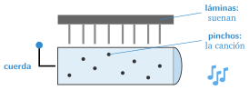
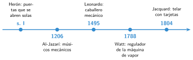
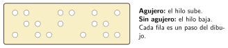

Autómatas y máquinas automáticas antes de la electrónica
🤔 Pienso5 min
Qué hago aquí: Piensa un momento y contesta con lo que ya sabes. No pasa nada si no lo sabes: es para empezar.
Una caja de música toca sin pilas. Al darle cuerda, gira un cilindro con pinchos. Cada pincho golpea una lámina y suena una nota. ¿Dónde está guardada la canción?

📖 Leo y aprendo20 min
Qué hago aquí: Lee despacio, mira los dibujos y los ejemplos, y quédate con la idea clave del final.
Hace siglos ya había máquinas que se movían solas. No tenían electricidad: funcionaban con muelles, pesos, agua o aire. Se llaman autómatas.

Más tarde llegaron máquinas que se corregían solas. La más famosa es el regulador de Watt.
En 1804, el telar de Jacquard tejía dibujos siguiendo unas tarjetas con agujeros. Para tejer otro dibujo se cambiaban las tarjetas. Las tarjetas eran un programa.

✏️ Hago20 min
Qué hago aquí: Haz las actividades en orden. Empieza siempre por las básicas.
¿Qué es un autómata? Escríbelo con tus palabras.
Mira la línea del tiempo. ¿Qué máquina es la más antigua? ¿Y la más moderna?
En el regulador de Watt, ¿qué pasa con las bolas cuando la máquina va muy rápido?
En el telar de Jacquard, ¿qué hace de programa? ¿Cómo se cambia el dibujo?
✏️ Puedes responder escribiendo, con un dibujo o un esquema, o contándolo en voz alta.
🚀 Amplío (si quieres saber más)
Qué hago aquí: ¿Has terminado? Lee la curiosidad o elige el reto. Es voluntario.
Busca información sobre un autómata famoso. Escribe quién lo hizo, cuándo y qué movimiento hacía.
✅ Compruebo5 min
Qué hago aquí: Contesta sin mirar la ficha y marca cómo lo llevas.